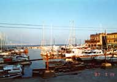

 日も暮れかかってきたので夕食にすることにして、お勧め品が食べられそうで雰囲気の良 い所にしようと、ヨットハーバーのレストランに入る。日は西に沈みかけ、東には明日訪れるポンペイの悲劇をもたらし たベスビオス火山が地中海の脇に聳え立っていた。その景色を眺めながら一人で夕食を取っていた。何々注文したか忘れたが、お勧め品のムール貝の料理も頼んでいた。日 本で言うとからす貝らしい、それのトマトソースに込みでにんにくが効いていたと思う。美味しいとしか言い様がない、大 皿に山盛りの貝が出てきた。食べ方を教わる、貝を二つに割って、身のない貝殻で身をすくって食べる方法を聞いて、この 方法で食べた。ヨットハーバー、地中海、遠くにはベスビオス火山この雰囲気に浸り夕食を進める、これにカンツォーネが 聞こえてきたら最高だなと思いつつ。美味しい料理に夢中になり食べ終わる頃には日がとっぷりと暮れていた。背後は町の 火が灯り明るくなっている感じが分かった。 テーブルで会計を済ませて店を出るために、席を立って振り返ってびっくりした。すごく綺麗な夜景が目の前に繰り広げ られていた、えーーーぇ！そうだここは世界三大夜景で有名なナポリだったんだ。 ２００１年１１月 １日 記
|